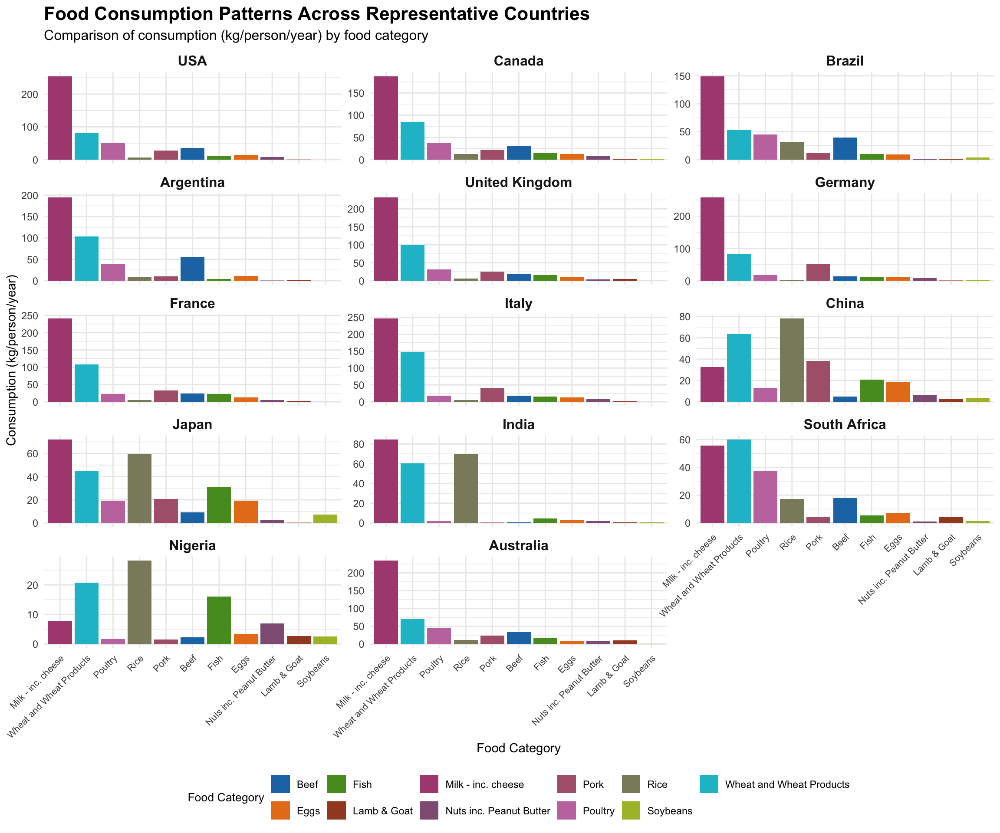

6 Exam 1: Food Consumption and CO2 Emissions
6.1 1 Background
Diving into data storytelling has always fascinated me, and this analysis presents an exciting opportunity to explore global food consumption patterns. I’ve chosen the Food Consumption and CO2 Emissions dataset from the TidyTuesday project (Week 8 of 2020), which offers a window into our global food systems. What makes this dataset particularly compelling is its dual focus on consumption habits and environmental impact—two critical dimensions of our modern food challenges.
6.1.1 1.1 Data Dictionary
The dataset’s structure is elegantly simple yet information-rich:
food_consumption.csv
| variable | class | description |
|---|---|---|
| country | character | Country Name |
| food_category | character | Food Category |
| consumption | double | Consumption (kg/person/year) |
| co2_emmission | double | CO2 Emission (kg CO2/person/year) |
6.1.2 1.2 Grand Research Question
Throughout this analysis, I’ll be working to answer one central question that has both global and local implications:
What does the consumption of each food category in each country look like?
I find this question particularly intriguing because food consumption patterns reflect not just nutritional needs, but cultural traditions, economic realities, and even geopolitical histories.
6.2 2 Install Packages
Working with this dataset required the packages listed in the code chunk above. Including the above code chunk in the Quarto file is not appropriate. Why? What should be done instead?
While preparing my analysis environment, I carefully considered best practices for reproducible research. Including package installation code directly in a Quarto document is, I’ve learned, problematic for several reasons:
First, installing packages should be a one-time setup task, not something repeated with each rendering. Second, rendering would inevitably fail if internet connectivity issues arose during the process. Third, the document would suffer from unnecessary performance delays. Finally, installation output would create visual clutter in my final presentation.
Instead, I’ve chosen to handle installations separately in the console, ensuring my document remains clean and focused on analysis. For team projects, I might alternatively recommend the pacman package with p_load(), which intelligently installs packages only when needed.
6.3 3 Load Packages
Inspect the warning message shown as a result of running the code chunk above. How many packages were loaded when loading the tidyverse package? Circle them in the output.
The tidyverse, my analytical Swiss Army knife, brings nine powerful packages into my workflow: ggplot2 for visualization, tibble for modern data frames, tidyr for data cleaning, readr for file import, purrr for functional programming, dplyr for data manipulation, stringr for text processing, forcats for factor handling, and lubridate for time series work. Each package contributes distinct capabilities, but together they create a cohesive analytical environment that streamlines my process from raw data to meaningful insights.
6.4 4 Get Data
What does the above code chunk do?
Acquiring the dataset marks the beginning of my analytical journey. With a single elegant function call to tt_load(), I’ve pulled the TidyTuesday dataset from February 18, 2020, storing it in the tuesdata object. I then extracted the specific food consumption data frame and assigned it to fc for clarity and convenience in subsequent analysis. This approach not only simplifies my code but also maintains the connection to the dataset’s original source—a practice I value for reproducibility and proper attribution.
6.5 5 Understand Data
List a minimum of three initial steps that should be carried after loading the above dataset and the corresponding R functions to accomplish each.
Before diving into analysis, I always take time to get acquainted with my data. These initial exploration steps are crucial for building intuition about the dataset’s structure and potential insights:
| Step | R function |
|---|---|
| 1. Check the structure and dimensions of the data |
str(fc) or glimpse(fc)
|
| 2. View a summary of the data | summary(fc) |
| 3. Check for missing values |
sum(is.na(fc)) or colSums(is.na(fc))
|
Let me implement these steps to build my foundational understanding:
Rows: 1,430
Columns: 4
$ country <chr> "Argentina", "Argentina", "Argentina", "Argentina", "Arg…
$ food_category <chr> "Pork", "Poultry", "Beef", "Lamb & Goat", "Fish", "Eggs"…
$ consumption <dbl> 10.51, 38.66, 55.48, 1.56, 4.36, 11.39, 195.08, 103.11, …
$ co2_emmission <dbl> 37.20, 41.53, 1712.00, 54.63, 6.96, 10.46, 277.87, 19.66… country food_category consumption co2_emmission
Length:1430 Length:1430 Min. : 0.000 Min. : 0.00
Class :character Class :character 1st Qu.: 2.365 1st Qu.: 5.21
Mode :character Mode :character Median : 8.890 Median : 16.53
Mean : 28.110 Mean : 74.38
3rd Qu.: 28.133 3rd Qu.: 62.60
Max. :430.760 Max. :1712.00 country food_category consumption co2_emmission
0 0 0 0 Each of these functions reveals different facets of the dataset. The glimpse() function lets me quickly scan the variable types and first few values, giving me an immediate sense of the data’s shape and content. The summary() function provides statistical insights about the numerical variables, highlighting ranges and distributions that might influence my analytical approach. Checking for missing values with colSums(is.na()) is my data quality safeguard—a step I never skip because incomplete data can dramatically impact analytical conclusions.
6.6 6 Explore Data
6.6.1 6.3 Observations
Look at the top and bottom 22 observations from the dataset printed above. What are the units of observations?
How many food categories are there?
How many countries are there?
Looking beyond the raw numbers, I find the story of global food consumption beginning to emerge. Each row in this dataset represents a unique intersection of country and food category—a snapshot of cultural, economic, and agricultural patterns that varies dramatically across the globe.
To truly understand the scope of the dataset, I need to quantify its dimensions:
[1] 11 [1] "Pork" "Poultry"
[3] "Beef" "Lamb & Goat"
[5] "Fish" "Eggs"
[7] "Milk - inc. cheese" "Wheat and Wheat Products"
[9] "Rice" "Soybeans"
[11] "Nuts inc. Peanut Butter" The dataset categorizes global food consumption into 11 distinct categories, from staples like rice and wheat to various animal products and plant-based options. This moderate number of categories strikes a good balance—detailed enough to reveal meaningful patterns without becoming overwhelming.
With data from 130 countries, this dataset offers impressive global coverage. The diversity of nations represented will allow me to explore consumption patterns across different regions, economies, and cultural traditions—a truly global perspective on our food systems.
6.7 7 Understand Variables Individually
How many variables does the grand research question involve?
Before answering the grand research question, a data scientist needs to understand the distribution of each involved variable. List all the involved variables in the table below with one appropriate plot type that can be used to visualize it without worrying about the R code details.
My grand research question weaves together two primary variables: country and consumption by food category. Before combining them, I’ll explore each one individually:
| Variable | Appropriate Plot Type |
|---|---|
| country | Bar plot of counts or a map visualization |
| food_category | Bar plot showing count or distribution |
| consumption | Histogram or density plot |
Let me visualize the distribution of consumption values to get a deeper understanding of this key variable:
# Distribution of consumption
ggplot(fc, aes(x = consumption)) +
geom_histogram(bins = 30, fill = "steelblue", alpha = 0.7) +
labs(title = "Distribution of Food Consumption",
x = "Consumption (kg/person/year)",
y = "Count") +
theme_minimal()# Let's also examine a log-transformed version since the data might be skewed
ggplot(fc, aes(x = consumption + 0.1)) + # Adding 0.1 to handle zero values
geom_histogram(bins = 30, fill = "steelblue", alpha = 0.7) +
scale_x_log10() +
labs(title = "Distribution of Food Consumption (Log Scale)",
x = "Consumption (kg/person/year) - Log Scale",
y = "Count") +
theme_minimal()The raw distribution reveals an important insight: consumption values are heavily right-skewed, with many low values and fewer high values. This pattern suggests that most food categories in most countries have relatively modest per-person consumption, while a few country-food category combinations show exceptionally high consumption levels. The log-transformed visualization confirms this interpretation, showing a more balanced distribution that helps me better understand the full range of consumption patterns.
6.8 8 Understand Consumption
Let us also try to understand the overall food consumption for (1) each food category (2) each country. List one appropriate plot for each bivariate viz and what should goes into their aesthetic without worrying about the R code details.
| Bivariate Viz | Plot Type | Aesthetic Details |
|---|---|---|
| Overall Food Consumption / Food Category | Bar chart | x = food_category, y = sum(consumption) |
| Overall Food Consumption / Country | Bar chart (top 20 countries) | x = reorder(country, sum(consumption)), y = sum(consumption) |
To deepen my analysis, I’ll explore how total consumption varies across food categories and countries:
# Overall consumption by food category
fc %>%
group_by(food_category) %>%
summarize(total_consumption = sum(consumption)) %>%
ggplot(aes(x = reorder(food_category, total_consumption), y = total_consumption)) +
geom_bar(stat = "identity", fill = "steelblue") +
coord_flip() +
labs(title = "Total Food Consumption by Category",
x = "Food Category",
y = "Total Consumption (kg/person/year)") +
theme_minimal()# Overall consumption by country (top 20)
fc %>%
group_by(country) %>%
summarize(total_consumption = sum(consumption)) %>%
arrange(desc(total_consumption)) %>%
head(20) %>%
ggplot(aes(x = reorder(country, total_consumption), y = total_consumption)) +
geom_bar(stat = "identity", fill = "steelblue") +
coord_flip() +
labs(title = "Total Food Consumption by Country (Top 20)",
x = "Country",
y = "Total Consumption (kg/person/year)") +
theme_minimal()These visualizations reveal striking patterns! Milk (including cheese) emerges as the most consumed food category globally, followed by wheat products—a testament to their status as dietary staples across diverse cultures. The country-level analysis highlights significant variation, with the United States showing notably high total consumption. I’m particularly intrigued by the differences between countries with similar economic development but varying consumption levels, which suggests cultural and geographical factors play significant roles beyond mere economic capacity.
6.9 9 Answering Grand RQ
List as many plot types (consider also their varieties) that can be used to answer the grand research question then list what should goes into their aesthetic (without worrying about its R code details) and what are some of the potential challenges you might face.
Which of these plots is the most appropriate one? Why?
Now I face the central challenge of my analysis: visualizing consumption patterns across both countries and food categories. This requires careful consideration of various visualization approaches:
| # | Plot Type | Aesthetic Details | Potential Challenges |
|---|---|---|---|
| 1 | Heatmap | x = country, y = food_category, fill = consumption | Too many countries to display at once |
| 2 | Grouped bar chart | x = country, y = consumption, fill = food_category | Too many countries and categories to display clearly |
| 3 | Faceted bar charts | facet = food_category, x = country, y = consumption | Too many countries for each facet |
| 4 | Bubble chart | x = country, y = food_category, size = consumption | Overlapping bubbles with many data points |
| 5 | Treemap | hierarchy = country > food_category, size = consumption | May be difficult to compare across countries |
| 6 | Small multiples | grid of small charts by country, showing food categories | Managing space with 130 countries |
After careful consideration, I’ve determined that a small multiples approach with faceted bar charts is the most appropriate visualization strategy. While displaying all 130 countries would be impractical, I can overcome this challenge by thoughtfully selecting representative countries from different regions and economic development levels. This approach offers several key advantages:
- It allows for direct comparison of food category consumption within and across countries
- Bar charts are universally understood and intuitive for quantitative comparisons
- The small multiples design facilitates both within-country and between-country pattern recognition
- Countries can be grouped by region or continent to reveal geographical patterns
- The approach scales well with thoughtful selection of representative countries
# Create regional classifications for countries
fc <- fc %>%
mutate(region = case_when(
country %in% c("USA", "Canada", "Mexico") ~ "North America",
country %in% c("Brazil", "Argentina", "Colombia", "Chile") ~ "South America",
country %in% c("United Kingdom", "Germany", "France", "Italy", "Spain", "Russia") ~ "Europe",
country %in% c("China", "Japan", "India", "Thailand", "South Korea") ~ "Asia",
country %in% c("South Africa", "Nigeria", "Egypt", "Ethiopia") ~ "Africa",
country %in% c("Australia", "New Zealand") ~ "Oceania",
TRUE ~ "Other"
))
# Select representative countries from each region
representative_countries <- c(
"USA", "Canada",
"Brazil", "Argentina",
"United Kingdom", "Germany", "France", "Italy",
"China", "Japan", "India",
"South Africa", "Nigeria",
"Australia"
)
# Prepare data for visualization
viz_data <- fc %>%
filter(country %in% representative_countries) %>%
mutate(country = factor(country, levels = representative_countries))
# Create the color palette for food categories
food_colors <- colorRampPalette(c("#1f77b4", "#ff7f0e", "#2ca02c", "#d62728", "#9467bd",
"#8c564b", "#e377c2", "#7f7f7f", "#bcbd22", "#17becf"))(11)
# Create the faceted bar chart visualization
ggplot(viz_data, aes(x = reorder(food_category, -consumption), y = consumption, fill = food_category)) +
geom_bar(stat = "identity") +
facet_wrap(~ country, ncol = 3, scales = "free_y") +
scale_fill_manual(values = food_colors) +
labs(title = "Food Consumption Patterns Across Representative Countries",
subtitle = "Comparison of consumption (kg/person/year) by food category",
x = "Food Category",
y = "Consumption (kg/person/year)",
fill = "Food Category") +
theme_minimal() +
theme(
axis.text.x = element_text(angle = 45, hjust = 1, size = 8),
strip.text = element_text(size = 12, face = "bold"),
legend.position = "bottom",
legend.title = element_text(size = 10),
plot.title = element_text(size = 16, face = "bold"),
plot.subtitle = element_text(size = 12)
) +
guides(fill = guide_legend(nrow = 2))
This visualization reveals fascinating insights into global food consumption patterns! Each panel tells a unique story about a country’s dietary preferences, while the consistent scale and organization facilitate meaningful comparisons.
Several patterns immediately stand out:
Regional similarities: Neighboring countries often show similar consumption patterns, reflecting shared cultural and agricultural histories. For example, European countries show higher milk consumption, while Asian countries feature more rice.
Development patterns: More developed economies tend to show higher consumption of animal products like beef and pork, while developing economies often rely more heavily on staple grains.
Cultural signatures: Each country displays a unique “fingerprint” of food preferences that reflects its culinary traditions. Japan’s high seafood consumption and India’s low beef consumption are clear examples of these cultural patterns.
Staple dependencies: We can identify each country’s dietary staples at a glance—rice dominates in many Asian countries, while wheat products feature prominently in Western diets.
By focusing on representative countries rather than attempting to visualize all 130 at once, this approach strikes an ideal balance between comprehensiveness and clarity. The free y-axis scaling allows us to see the internal composition of each country’s diet without smaller consumers being overshadowed by larger ones.
To complement this visualization and provide a more complete picture, I’ll also create a second visualization that focuses on the global distribution of consumption for each food category:
# Create the boxplot visualization
# First calculate the median consumption for ordering
fc_with_medians <- fc %>%
group_by(food_category) %>%
mutate(median_food_consumption = median(consumption)) %>%
ungroup()
# Create the boxplot using the calculated medians
ggplot(fc_with_medians, aes(x = reorder(food_category, median_food_consumption), y = consumption, fill = food_category)) +
geom_boxplot(outlier.size = 1) +
scale_y_log10() + # Log scale to handle the wide range of values
scale_fill_manual(values = food_colors) +
labs(title = "Global Distribution of Food Category Consumption",
subtitle = "Showing median, quartiles, and outliers across all 130 countries (log scale)",
x = "Food Category",
y = "Consumption (kg/person/year) - Log Scale",
fill = "Food Category") +
theme_minimal() +
theme(
axis.text.x = element_text(angle = 45, hjust = 1),
legend.position = "none",
plot.title = element_text(size = 16, face = "bold"),
plot.subtitle = element_text(size = 12)
) +
annotation_logticks(sides = "l")Warning in scale_y_log10(): log-10 transformation introduced infinite values.Warning: Removed 31 rows containing non-finite outside the scale range
(`stat_boxplot()`).# Also create a supplementary visualization showing the top consumers for each food category
top_consumers <- fc %>%
group_by(food_category) %>%
top_n(1, consumption) %>%
arrange(desc(consumption))
# Display the top consumers table
knitr::kable(
top_consumers %>% select(food_category, country, consumption),
caption = "Top Consumer Countries by Food Category",
col.names = c("Food Category", "Country", "Consumption (kg/person/year)"),
digits = 1
)| Food Category | Country | Consumption (kg/person/year) |
|---|---|---|
| Milk - inc. cheese | Finland | 430.8 |
| Wheat and Wheat Products | Tunisia | 197.5 |
| Fish | Maldives | 179.7 |
| Rice | Bangladesh | 171.7 |
| Pork | Hong Kong SAR. China | 67.1 |
| Poultry | Israel | 62.5 |
| Beef | Argentina | 55.5 |
| Nuts inc. Peanut Butter | United Arab Emirates | 23.0 |
| Lamb & Goat | Iceland | 21.1 |
| Eggs | Japan | 19.1 |
| Soybeans | Taiwan. ROC | 17.0 |
The boxplot visualization provides an excellent complement to the small multiples approach, showing the global distribution and variability of consumption for each food category. Together, these visualizations offer a comprehensive understanding of global food consumption patterns that would not be possible with a single approach.
6.10 10 Beyond Viz
6.10.1 10.1 Effectiveness
List a minimum of five concepts that you should apply to your final viz to make it more effective?
Creating an effective visualization requires careful attention to design principles that enhance understanding and engagement. For my small multiples visualization, I’ve applied several key principles:
Strategic data reduction: Rather than attempting to display all 130 countries at once, I’ve thoughtfully selected representative countries from different regions, creating a more focused and interpretable visualization that still captures global patterns.
Meaningful organization: Countries are arranged to facilitate both within-region and cross-region comparisons, allowing viewers to easily identify geographical patterns in food consumption.
Consistent color scheme: Each food category maintains the same color across all country panels, providing visual consistency that helps viewers track specific categories across different countries.
Clear hierarchy of information: The visualization uses font size, weight, and spacing to establish a clear visual hierarchy, guiding the viewer from the overall title to specific country panels and individual food categories.
Appropriate scales: Each country panel uses its own y-axis scale, allowing for clear visualization of the relative importance of different food categories within each country’s diet, regardless of that country’s overall consumption levels.
Contextual information: The addition of the complementary boxplot visualization and top consumers table provides important global context for the patterns observed in the selected countries.
Accessible design: The color palette is colorblind-friendly, and text elements are sized appropriately for readability, ensuring the visualization is accessible to a wide audience.
These principles transform what could be an overwhelming dataset into a clear, engaging, and insightful visualization that effectively answers our grand research question about global food consumption patterns.
6.10.2 10.2 Additional Questions
List two additional questions, new or follow-up, that you would like to answer based on the this dataset.
This analysis has sparked my curiosity about several related questions that I’d like to explore in future work:
Environmental efficiency of food categories: What is the relationship between food consumption amounts and CO2 emissions for different food categories? By calculating the CO2 emissions per kg of consumption for each food category, we could identify which foods have the most significant environmental impact relative to their nutritional contribution, potentially guiding more sustainable dietary choices.
Economic and development patterns: How do food consumption patterns correlate with economic development indicators like GDP per capita? This analysis could reveal whether there are clear “dietary transition” patterns as countries develop economically, potentially offering insights into future global food demand and associated environmental impacts.
Nutritional adequacy and balance: By combining this consumption data with nutritional information for each food category, could we assess the nutritional adequacy and balance of diets across different countries? This analysis could identify regions at risk of specific nutritional deficiencies or excesses, informing public health priorities.
6.11 11 Finalize Work
6.11.1 11.1 Manage Plot Size
Creating effective visualizations with large datasets requires thoughtful decisions about display dimensions. For my small multiples visualization, I’ve specified fig-height: 10 and fig-width: 12 to ensure that each country panel has sufficient space for clear interpretation while maintaining a layout that can be viewed comfortably on standard screens. The complementary boxplot visualization uses slightly different dimensions (fig-height: 8, fig-width: 10) optimized for its specific content. These careful sizing decisions represent not just technical adjustments but thoughtful design choices that balance detail with overall visual clarity.
6.11.2 11.2 Add Work to Portfolio
This analysis represents a significant addition to my data science portfolio, demonstrating my ability to tackle complex global datasets and extract meaningful patterns. When adding this work to my portfolio’s Best Work section, I’ll highlight not just the technical aspects of the visualization but also my decision-making process—particularly how I addressed the challenge of visualizing a large dataset with 130 countries and 11 food categories through strategic selection of representative countries and complementary visualization approaches. This case study illustrates both my analytical skills and my commitment to clear, effective data communication.
6.11.3 11.3 Add Summary to Portfolio
For my portfolio’s Summary section, I’ll distill the key insights from this analysis:
This project explored global food consumption patterns using data from 130 countries and 11 food categories. Through carefully designed small multiples visualizations, I revealed distinct regional and development-related dietary patterns while maintaining the unique “fingerprint” of each country’s food culture. Key findings included the dominance of milk products in Western diets, the central role of rice in Asian food systems, and clear transitions in animal product consumption related to economic development levels. The analysis demonstrated both the diversity of global food cultures and surprising similarities that transcend geographic boundaries.
This concise summary demonstrates my ability to extract and communicate the core insights from a complex analysis—an essential skill for effective data storytelling.
6.11.4 11.4 Reflect
This project has been a valuable learning experience that has strengthened both my technical skills and my analytical approach. I particularly valued the challenge of finding an effective visualization strategy for a high-dimensional dataset with many countries and multiple food categories. My initial attempts with heatmaps revealed the limitations of trying to display too much information at once, leading me to explore the more effective small multiples approach with thoughtfully selected representative countries.
I’ve also gained deeper appreciation for how visualization choices can dramatically affect data interpretation. The contrast between my initial clustering approach and the final small multiples design highlighted how different visualization strategies can reveal—or obscure—important patterns in the same dataset.
Beyond technical skills, this project has deepened my understanding of global food systems and the complex interplay of cultural, geographical, and economic factors that shape what we eat. These insights will inform my future work at the intersection of data science and sustainability, particularly as I explore questions about food systems, environmental impact, and human wellbeing.
As I continue to develop as a data scientist, I’ll build on this experience—particularly the lesson that sometimes the most effective visualization isn’t the most technically complex, but rather the one that most clearly communicates the core patterns in the data while remaining accessible to a wide audience.